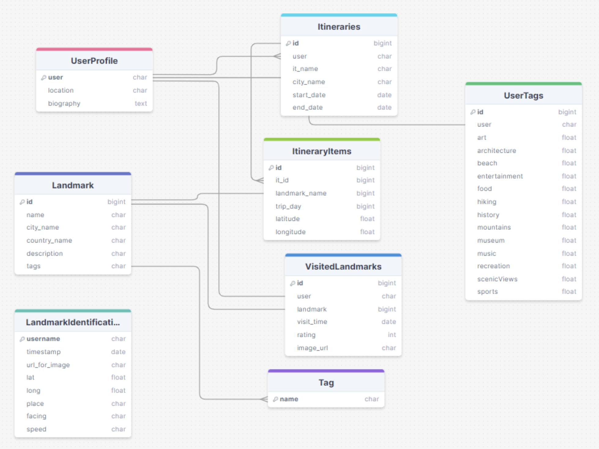

WanderHub: An All-in-One Application to Meet your Travel Needs
A collaborative travel platform that helps travelers stay connected, surface respectful, off-the-beaten-path experiences, and view personalized recommendations.
Context
Modern travel apps prioritize scale and popularity, which often funnels people toward the same crowded spots and misses cultural context. WanderHub asks: what if a travel product centered around a users specific interests—and rewarded discovery beyond the algorithmic “top 10”?
Research & Insights
Competitive Analysis
We audited leading travel platforms and identified gaps in:
- Google Search: Can't tailor to the user profile, hard to compile information, no community aspect
- IOS Visual Look Up: Works only online, privacy concerns, limited accuracy, only available in certain regions and locations, no text-to-speech
- Tour Guide: Volatile experiences, finding group tours, cost, difficult logistics for booking, less tailorable
- Travel Guidebook: Outsourced research, limited and outdated, cost and weight, finding directions
- Wander Log: No social media exploration, aggressive monetization, limited description on sights (no follow-up, directed question possibility
User Interviews & Affinity Mapping
We conducted user interviews on potential avenues we could take our application, by focusing on 3 main ideas: Needs, Wants, and Pain Points.
- Needs: Travel safely in a new place, communicate with group, making an itinerary
- Wants: Learn about history, culture, and food, integrate information from trustworthy sources (Google, Yelp, and Social Media)
- Pain Points: Planning logistics of a trip, time needed to plan a trip, finding transportation in a new place, group travel coordination
Personas & Scenarios
Working John - New Traveler
50 years old man: he hasn't taken a vacation in 10 years due to work
- Doesn't know what sites to see or what to plan
- Intuative to use as he is older and doesn't want to learn something complicatied
Anna Windsor - Travel Enthusiast
Has visited most popular tourist locations, but bad at navigation
- Wants unique places to visit
- Wants to learn information about the landmarks he sees
Design Decisions
Storymap
We created a plan that consisted of 3 phases of development:
- Basic UI and functionality: basic viewing, searching, information changing, and offline functionality
- Advanced functionality: Image recognition, landmark recognition, text to speech tour guide, smart routing and landmark recommendations through GPS, smart assistant with OpenAI API
- Novel functionality: Packing all features together for a seamless user experience
Initial Design
After conducting user interviews, we created this initial design (view video here). From there, we ran usability tests and iterated on the flow and UI. We discovered that:
- Users struggled to find the walking map with interesting locations - "Explore Nearby" button
- Users were confused by the compass icon and had difficulty understanding its significance of finding trips dashboard and edit their trip itineraries
- Users had trouble understanding how to plan a new trip
Design Improvements
- Improved discoverability of "Explore Nearby" by changing the button to give the user more context about the action
- Changed compass icon to represent something that is more intuitively signifies the trip dashboard to the user
- Made a clearer call to action search bar to improve user understandability
Final Design
After incorperating user feedback into our design, we created a finalized UI flow map that we could start developing in Swift and Python.
Product Development & Deployment
Third Party Tools Used
- Frontend: iOS SDK, MapKit, Alamofire
- Backend: Djang/Django_Rest, POSTGRESQL, ChatGPT and Whisper APIs, Text to Speech, Google Cloud Vision Client/API, Python-dotenv, GeoPy
KPI's
- Percent of recommended landmarks that users visit
- Average rating of recommended landmarks
- Percent of users who add at least one new (non-top-10) landmark to their itinerary
Frontend
- Landmark Store: Once a trip is selected, a request is made to the backend to retrieve itinerary landmarks so Map View and Itinerary View display fresh results
- Text to Speech: configures the parameters for the voice and sends them to the Google API along with the text to generate audio for the text, which can then be accessed by the audio player that provides playback control
- Destinations for You: backend sends list of suggestions upon login. When clicked on, a booking view is autopopulated. Once submitted, backend generates itinerary that's visible in the Upcoming Trips section
- Upcoming Trips: Upon trip selection, request is made to retrieve the itinerary and becomes visible. Helps with memory and state mangement of the system whil also preventing issues with having to retrieve too much data in one request: speeding up the process
- User Preferences & RatingsUser Preferences aren't visible on the frontend to account for users not being fullt aware of their preferences. Recommendation system will update recommendations based on initial interests, landmark raitings, and overall ratings
- Navigation LogicThe five sections of the app are controlled by the navigation bar that has an Enum variable for each section. Each section also has additional views, so this organization allows for efficiently managing navigation and preventing the navigation Stack from getting too large
Backend
- Database Schema: stores all information pertinent to users, landmarks, and itineraries
- UserProfile: serialized User, location, biography, and UserTags are linked. We selected a thought-out range of interests and create a record for each User that stores their preference weighting for each of these interests
- Landmark: all landmarks we receive through our OpenAI and Google Cloud Vision calls
- VisitedLandmark: stores each Landmark object that a certain User has taken a picture of along with their rating, the image URL, and visit time
- LandmarkIdentification: used as an intermediary table to pass image data to the Vision API
- Itineraries: all of our users' itineraries, with a key for its User, and holds information about the trip
- ItineraryItems: Landmark key, an Itinerary key, and information about the visit day and location

- User Profiles and Feedback Loops:
When a user creates a profile, their name, username, interesets, and past landmarks they've visted are collected and
sent to a Postgres database. When they initially select their interests, their preference weighting is initialized
- When a user takes a photo of a landmark, the identification of the location is recorded in the database and added to the user's activity log
- A user has the option to rank the landmark after visiting. Once at least 10 landmarks have been rated, user preference weights get updated depending on the average score for landmarks in with a certain tag
- Itinerary Creation & Use: After a user inputs their trip destination and dates, that info, as well as their preferences from their user profile, are passed to a ChatGPT API call to make an itinerary. That itinerary is then sent to the user in the front end, where they can make changes as they see fit. Those changes are stored under the user’s profile in the database. The itinerary can be added to based on the users interests, and the day given
- Once the user is traveling, the iOS core location framework is used to get the user’s geolocation, which will be used in another API call to return N closest landmarks. The map will be updated with the newly queried landmarks
- Landmark Identification and information:
When a user visits a landmark, they take a photo to identify it. The app then also extracts geolocation information utilizing the iOS core location framework. The picture is sent the picture to the Google Landmark API which responds with a list of potential landmark matches and their coordinates, which are cross-referenced with the geolocation data to confirm the correct landmark identity. The identified landmark's information is then retrieved and sent back to the user
- A call is also made to the ChatGPT API, where the user's preferences and the landmark information are sent. ChatGPT generates tailored information about the landmark based on the user's interests and preferences. This information is converted into audio format using a text-to-speech library, and then sent to the frontend
Takeaways
What I learned
- Design a full stack mobile application
- Empathy driven design, content organization, and acessibled are the foundations of a good application
What I’d do differently
- Continue doing usability testing on final product, so continual improvements can be made
- Plan time better for longer tasks